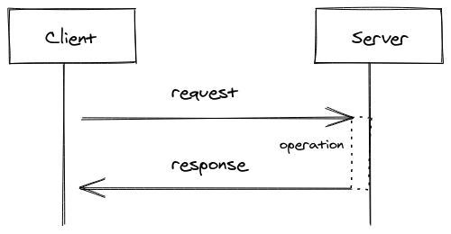

2021-03-02
This document gives an overview about SSE. What is it. When to use. The Terminology.
As the abbr. suggest the contept behind SSE is that the server is sending data asynchronously to client. The connection client-server is done once.
This approach differs from the well-known concept of client-server communication. Where client does a request to a server and the server responses to client. The difference is that the initiation is done by the client.

Whereas in the SSE concept the server initiates.